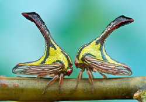
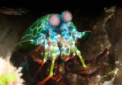
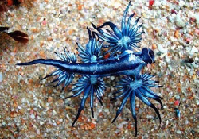

Animals curiosos
A continuació podem veure una sèrie d'animals que no són fàcils de vuere al dia al dia
| Umbronia Spinosa | Tamarutaca | Glaucus Atlanticus |
|---|---|---|
| Tipus: Herbívor | Tipus: Carnívor | Tipus: Carnívor |
| Habitat: Sud Amèrica | Habitat: Selva Humida | Habitat: Mars temperats i tropicals |
| Descripció: Imita les espines d'algunes plantes per camuflar-se. | Descripció: Són agressives, solitàries i passen la major part del temps amagades en roques. | Descripció: Viuen en mar obert. Són hermafrodites i poden arribar a ser caníbals. |
|  |  |  |